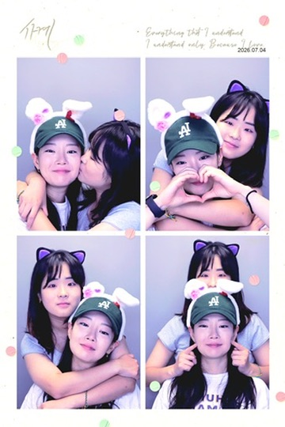
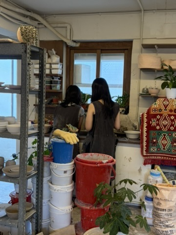
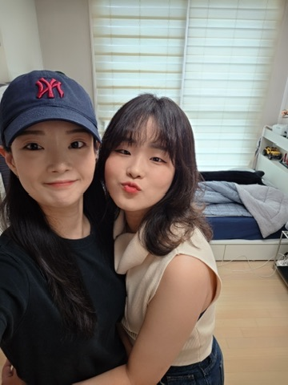
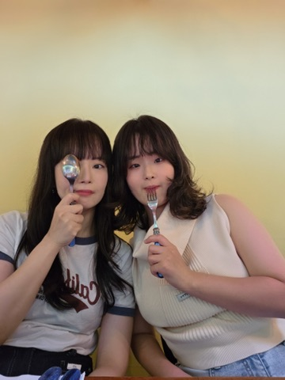

MOMENT 01
SIEUN & NYUNGJU
녕주야,
우리가 함께 보낸 백 번의 하루를
다시 한번 같이 걸어볼래?
OUR FIRST 100 DAYS
01 · THE BEGINNING
네가 내 하루에 이렇게 큰 사람이 될 거라는 것.
너와 나눈 사소한 말들이 오래 마음에 남을 거라는 것.
그리고 백 일이 지난 오늘도, 처음처럼 네가 궁금하다는 것.
02 · OUR MOMENTS
다시 볼 때마다 그날의 온도까지 떠오르는 네 장면을 모았어.

MOMENT 01

MOMENT 02

MOMENT 03

MOMENT 04
03 · OUR SUMMER MAP
속초의 밤바다에서 제주까지, 같은 날짜의 추억은 한 장에 모았어.
* 지도 핀은 추억을 보여주기 위한 지역 단위의 위치예요.
04 · BY THE NUMBERS
그리고 그 모든 순간의 중심에는 네가 있었어.
05 · WHY YOU
사실 백 가지도 모자라지만, 오늘은 이 마음부터.
REASON 01
“네가 웃으면 나도 따라 웃게 돼서”06 · TO YOU
녕주에게.
우리의 100일을 떠올려 보니까, 특별한 날보다 평범한 날들이 더 많이 생각났어.
같이 걷던 길, 시답잖은 이야기에 웃던 순간, 헤어지고 집에 가며 또 보고 싶다고 생각했던 밤.
그 평범한 순간들이 특별했던 건 언제나 네가 있었기 때문인 것 같아.
나와 함께해 줘서 고마워. 서툰 순간까지도 따뜻하게 안아줘서 고마워.
백 일 동안 내가 가장 좋아했던 순간은,
결국 네 옆에 있었던 모든 순간이었어.
앞으로 올 수많은 하루도 네 곁에서 함께 웃고 싶어. 지금보다 더 다정하게, 오래오래.
많이 좋아해.
시은이가
DAY 100, AND BEYOND
100 DAYS · ONE LOVE · OUR STORY